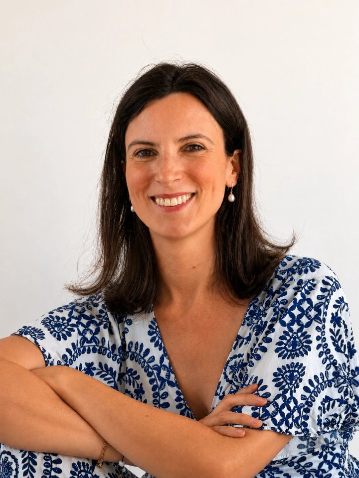
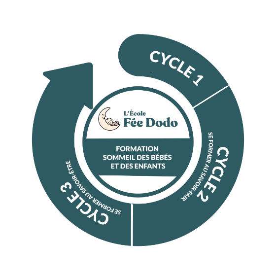

Qui suis-je ?
Je suis Sophie DOUESNEAU, consultante certifiée en sommeil des bébés et des enfants.
Si vous êtes ici, c'est peut-être que les nuits ou les siestes de votre enfant sont difficiles depuis quelque temps déjà.
Quand la fatigue s'installe, il n'est pas toujours facile de se repérer, et je suis là pour vous aider à y voir plus clair, à comprendre ce qui se joue et à avancer sereinement.
Je me suis formée pendant plus de deux ans à l'École Fée Dodo, dans une approche pluridisciplinaire qui va bien au-delà du sommeil : allaitement, nutrition pédiatrique, parentalité positive... Cette formation m'a donné une vision globale de tout ce qui peut influencer le sommeil de votre enfant, que je continue d'enrichir grâce aux données scientifiques les plus récentes.
Elle m'a aussi appris qu'il n'existe pas de solution toute faite : le sommeil de chaque enfant est unique, tout comme le quotidien de chaque famille.

J'ai vécu toute ma maternité à l'étranger, à Londres plus précisément, loin de ma famille et de mes repères. Épuisée par des nuits hachées, sans les miens pour me relayer, j'ai connu cet épuisement profond que tant de parents traversent, ce sentiment de ne plus savoir vers qui me tourner, noyée sous une multitude de conseils contradictoires et rarement en accord avec nos valeurs et notre quotidien.
C'est en me faisant accompagner par une consultante du sommeil que nos nuits se sont enfin apaisées, et que j'ai retrouvé du temps, de l'énergie, et cette vie de famille dont j'avais toujours rêvé.
Cette expérience m'a aussi donné à réfléchir : elle a réveillé en moi un vieux rêve, celui d'aider, de transmettre et d'accompagner à mon tour, moi qui avais longtemps travaillé dans le marketing sans jamais tout à fait l'oublier. Je ne connaissais pas encore le métier de consultante du sommeil, mais c'est bien ce métier qui a fini par donner vie à ce rêve. De retour d'expatriation, je me suis donc installée entre Paris et Versailles, et c'est là que tout a commencé.
Aujourd'hui, j'ai à cœur d'offrir aux parents une écoute bienveillante, des connaissances actualisées et des repères concrets, comme j'aurais aimé en trouver lors de mes premiers pas en tant que Maman.